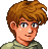

Welcome to wiki
Terraria is a land of adventure! A land of mystery! A land that's yours to shape, defend, and enjoy. Your options in Terraria are limitless. Are you an action gamer with an itchy trigger finger? A master builder? A collector? An explorer? There's something for everyone.
Start by building basic shelter, then dig for ore and other resources. Discover and craft over 500 weapons of magic, ranged, melee and summon varieties, as well as armor, and use them to battle hundreds of different enemies. Soon you'll be going head-to-head with any of more than 20 enormous bosses.

 Getting Started
Getting Started